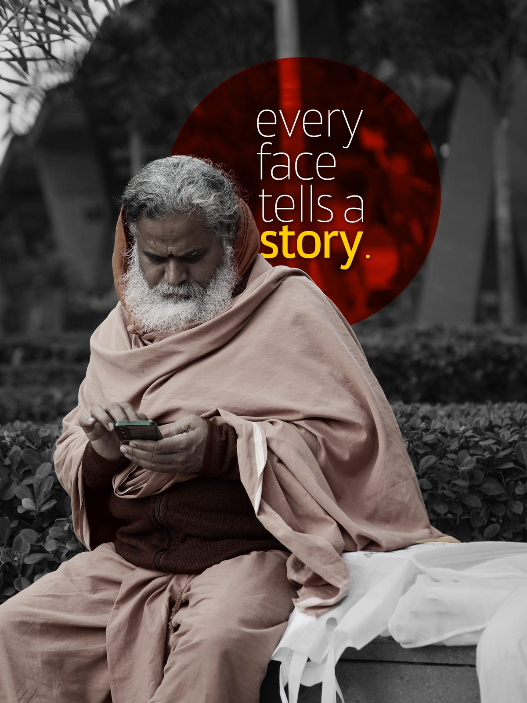

The Dale
A farmstay of ten rooms among mango orchards at Rausil, in Kumaon. The brief said no gold, no marble, nothing that sounds like luxury. So the mark is traced from two shapes the farm already owns: a chir pine cone and the valley it sits in.
Key points
- Brief: one colour, readable small in a navigation bar
- Method: drawn over photographs until the lines agreed
- Delivered: emblem, wordmark, lockups and favicon, as SVG
- Type: Cormorant Garamond capitals, Hanken Grotesk for text
- Colour: deodar green on snow mist, brick red kept for rare lines
Cormorant Garamond Display, capitals
Hanken Grotesk for text. Birdsong over the orchard, a walk to the ashram, dinner on the deck.
Deodar#2F4A3A
Snow Mist#EDF3F8
Ink#16231D
Geru#A3341F
96, 56, 32, 16 px


Chapter 02
Social Posts
Made to be read in the second before the thumb moves on.
